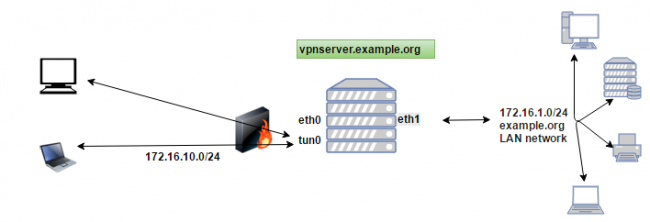

Настраиваем OpenVPN сервер Linux на примере Ubuntu
Хочу всех поприветствовать, я решил обновить статью по настройке OpenVPN сервера, с момента написания, утекло много воды, многое поменялось, многое не актуально, вот я и решил обновить записи и осветить нюансы в настройке это замечательной и полезной службы.
В этой статье я опишу настройку сервера, на примере версии OpenVPN v 2.3.2 настраивать буду на Ubuntu, но на остальных системах, все выполняется аналогичным образом, также мы настроим клиент на Linux (Ubuntu) и клиента Windows на примере Windows 10, но это я оформлю отдельными статьями, ссылки на них я приложу к этой статье.
Чтобы немного усложнить задачу сделаем еще разделение пользователей 2 основные группы ( обычные и привилегированные):
1) Обычные пользователи должны иметь возможность заходить в локальную сеть чтобы пользоваться ее ресурсами (принтеры, файловые серверы и т.п.) но выходить в интернет должен через свое подключение, в обход нашего OpenVPN сервера.
2) Привилегированные пользователи должны иметь возможность подключаться к нашему серверу и заходить в локальную сеть, при этом и в интернет они должны выходить через наш VPN сервер
Чуете как интрига закручивается?!
Примерная схема работы системы:

Предполагается что операционная система уже установлена, я не буду останавливаться на этом, для тестирования нам понадобится 2 машины с Ubuntu и одна WIndows 10 итого нам нужно 3 готовые системы.
Сформируем список задач, которые нам необходимо выполнить
1) Настроить OpenVPN сервер
2) Настроить удостоверяющий центр, для выпуска сертификатов (Certification authority)
3) Обеспечить доступ в интернет и локальную сеть пользователей подключенных к серверу ( настроить маршрутизацию )
4) Обеспечить возможность предоставления различных настроек разным клиентам OpenVPN сервера
5) Управление пользователями и удостоверяющим центром
6) Послесловие
В результате, нам останется настроить OpenVPN клиентов Linux и Windows после этого система станет полнофункциональной.
Вариант настройки OpenVPN клиента Ubuntu можно посмотреть в статье: Настраиваем OpenVPN клиент Linux
Ну с варинтом настройки OpenVPN клиента под Windows можно ознакомиться в статье: Настройка OpenVPN клиента на Windows 10. Там представлен пример для Windows 10, но на предыдущих операционных системах, все настраивается аналогично.
1. Настраиваем OpenVPN сервер
Установка необходимых пакетов проста:
sudo apt-get install openvpn dnsmasq
Поднимем права до root:
sudo -s
Нам необходимо создать конфигурационный файл сервера:
nano /etc/openvpn/server.conf
С содержимым:
# Указываем какой порт будет слушать наш сервер, по умолчанию 1194
port 1194
# Указываем протокол tcp или udp, т.к. у нас сервер до добавляем секцию server у меня используется протокол tcp
proto tcp-server
#proto udp-server
# На какой устройстве будет работать OpenVPN сервер, tun0 - это устройство создается автоматически
dev tun
# Сертификат удостоверяющего центра
ca /etc/openvpn/easy-rsa/easyrsa3/pki/ca.crt
# Сертификат и ключ нашего сервера, а также пути к ним
cert /etc/openvpn/easy-rsa/easyrsa3/pki/issued/vpnserver.crt
key /etc/openvpn/easy-rsa/easyrsa3/pki/private/vpnserver.key
# Ключ Диффи-Хельмана используется для защиты передаваемых ключей по открытому каналу
dh /etc/openvpn/easy-rsa/easyrsa3/pki/dh.pem
# Список отозванных сертификатов:
crl-verify /etc/openvpn/easy-rsa/easyrsa3/pki/crl.pem
# Указываем секретный TLS ключ
tls-auth ta.key 0
# Указыаем тип шифрования AES 256 bit
cipher AES-256-CBC
# Указываем подсеть в которой будут работать клиенты VPN сервера
server 172.16.10.0 255.255.255.0
# Указываем файл куда будут записываться IP адреса выданные клиентам
ifconfig-pool-persist ipp.txt
# Выдаем пользователям необходимые маршруты
push "route 172.16.1.0 255.255.255.0"
# Выдаем клиентам IP адрес DNS сервера у меня это VPN сервер
push "dhcp-option DNS 172.16.10.1"
# Выдаем клиентам DNS суффикс нашей локальной сети
push "dhcp-option DOMAIN example.org"
# Разрешаем подключенным клиентам OpenVPN сервера соединяться друг с другом
client-to-client
# Включаем возможность указания индивидуальных настроек для клиентов OpenVPN сервера
client-config-dir ccd
# Если необходимо разрешить нескольким пользователям подключаться по одному ключу ( необходимо снять комментарий )
#duplicate-cn
# Проверяем состояние клиента, отправляем пакеты каждые 10 сек. если в течении 120 сек. клиент не ответил, то он считаться отключенным
keepalive 10 120
# Используем сжатие трафика (если не нужно то можно закомментировать!)
comp-lzo
# Максимальное количество подключенных клиентов, мне достаточно 10
max-clients 10
persist-key
persist-tun
# Записи о состоянии подключенных клиентов и т.п.
status /var/log/openvpn-status.log
# Уровень логирования 0 в лог попадают только записи о критических ошибках сервера, если нужно подробнее, то выставляем 9 для дебагинга
verb 0
# Количество записей после которых будет производиться запись в лог
mute 20
Конфигурационный файл нашего сервера готов, но если мы попытаемся его перезагрузить, то он у нас не запустится, а отвалится с ошибкой, потому что нет ключей, сервера, и необходимых сертификатов, чтобы их создать нам необходимо настроить удостоверяющий центр.
Но для начала, генерируем секретный ключ TLS, он нужен для того чтобы еще больше повысить уровень безопасности передаваемых данных, этот ключ должен быть на сервере и у каждого подключенного клиента!
openvpn --genkey --secret /etc/openvpn/ta.key
Нам также необходимо создать директорию, в дальнейшем она нам понадобится:
mkdir -p /etc/openvpn/ccd
Также нам понадобится перенастроить DNSMASQ, чтобы он обслуживал только клиентов VPN сервера
nano /etc/dnsmasq.conf
Нас интересует строка:
interface=
Меняем на:
interface=tun0
Таким образом, мы получаем DNS сервер, который будет доступен только для клиентов подключенных к VPN серверу, а запросы извне обслуживаться не будут. Если нужны какие-то дополнительные параметры обслуживания DNS запросов, то это вам в конфиг DNSMASQ, там все снабжено подробными комментариями.
Перезапускаем службу DNSMASQ:
/etc/init.d/dnsmasq restart
2. Подниманием удостоверяющий центр
Это и настройкой назвать сложно, все уже готово, но в отличии от старых версий OpenVPN, теперь это все живет отдельно, а именно на github.com
Для начала нам необходимо установить пакет git
sudo apt-get install git -y
Клонируем репозиторий easy-rsa
git clone https://github.com/OpenVPN/easy-rsa.git /etc/openvpn/easy-rsa
Переходим в директорию с easy-rsa настроим и актируем наш удостоверяющий центр
cd /etc/openvpn/easy-rsa/easyrsa3/
Нам необходимо создать файл с настройками, чтобы не отвечать на лишние вопросы, при генерации ключей
Пример этого файла можно посмотреть в
nano vars.example
Я выложу свой, готовый, файл:
nano vars
С содержимым:
set_var EASYRSA_REQ_COUNTRY "RU"
set_var EASYRSA_REQ_PROVINCE "MO"
set_var EASYRSA_REQ_CITY "Moscow"
set_var EASYRSA_REQ_ORG "example.org"
set_var EASYRSA_REQ_EMAIL "root@example.org"
set_var EASYRSA_REQ_OU "IT department"
set_var EASYRSA_KEY_SIZE 2048
set_var EASYRSA_ALGO rsa
set_var EASYRSA_CA_EXPIRE 3650
set_var EASYRSA_CERT_EXPIRE 3650
Я не буду останавливаться на расшифровке параметров, это вам в качестве домашнего задания, назначение их можно посмотреть в vars.example, но это уже сами.
Активируем удостоверяющий центр:
./easyrsa init-pki
Генерируем корневой сертификат этого центра:
./easyrsa build-ca
Указываем пароль для работы с ключом, идея в том что если ваш сервер будет взломан, то без пароля, новые ключи будет нельзя выпустить — дополнительный рубеж безопасности.
Генерируем ключ Диффи-Хельмана
./easyrsa gen-dh
Вылезет сообщение вида:
DH parameters, 2048 bit long safe prime, generator 2
This is going to take a long time
Генерация занимает примерно 2 мин.
Наш сервер будет называться vpnserver (название по вашему усмотрению)
Генерируем для него ключ и сертификат:
./easyrsa build-server-full vpnserver nopass
Где:
nopass — отвечает за то чтобы не запрашивать пароль, по умолчанию он запрашивается, если пароль указать то при перезапуске OpenVPN сервера система будет требовать его ввода, иначе служба не запустится.
Нам выдаст нечто подобное:
writing new private key to '/etc/openvpn/easy-rsa/easyrsa3/pki/private/vpnserver.key.sol8RdbjZ7'
— Using configuration from /etc/openvpn/easy-rsa/easyrsa3/openssl-1.0.cnf
Enter pass phrase for /etc/openvpn/easy-rsa/easyrsa3/pki/private/ca.key:
Check that the request matches the signature
Signature ok
The Subject's Distinguished Name is as follows
commonName :PRINTABLE:'vpnserver'
Certificate is to be certified until Apr 16 13:07:43 2026 GMT (3650 days)
Сразу сгенериурем ключи для 2х наших клиентов, назовем их user и superuser
./easyrsa build-client-full user nopass
./easyrsa build-client-full superuser nopass
ПОМНИТЕ ОБ ЭТОМ: По хорошему, клиенты должны указать пароль для своих ключей, даже если ключи будут украдены, воспользоваться ими будет проблематично, но для тестов можно и не указать. Можно генерить ключи без пароля в тех случаях если планируется ставить OpenVPN клиента на маршрутизатор и чтобы каждый раз на него не лазить, то пароль не указываем.
Решать, как всегда, вам!
Генерируем список отозванных сертификатов, нужен он для того чтобы отключать пользователей, например пользователь уволился, мы ведь не побежим к нему домой удалять ключи из компа, мы можем сделать проще, просто отзываем ключ, запись появляется в файле, пользователь после этого не может подключиться к серверу, все довольны.
./easyrsa gen-crl
За дополнительными параметрами обращаемся к помощи:
./easyrsa help
OpenVPN настроен, теперь осталось его запустить
/etc/init.d/openvpn start
Если служба не запустилась, то лезем в лог /var/log/syslog,ответы на вопросы найдете там, если инфы маловато, то в конфиге сервера устанавливаем уровень логирования 9 и ищем записи о проблеме!
3. Настраиваем маршрутизацию в интернет и локальную сеть пользователей подключенных к VPN серверу
Тут тоже все просто, для начала нам необходимо разрешить форвардинг пакетов:
nano /etc/sysctl.conf
Находим строку и снимаем с нее комментарий:
#net.ipv4.ip_forward=1
Далее нам необходимо настроить правила фаерволла iptables, добавляем правило:
iptables -A FORWARD -o tun0 -j ACCEPT
iptables -A OUTPUT -o tun0 -j ACCEPT
iptables -t nat -A POSTROUTING -s 172.16.10.0/24 -o eth0 -j MASQUERADE
iptables -t nat -A POSTROUTING -s 172.16.10.0/24 -o eth1 -j MASQUERADE
Чтобы правила не сбрасывались после перезапуска сервера, нам их необходимо вписать в файл. Самое простое - это добавить записи в rc.local, эти правила со 100% вероятностью будут загружены при старте системы, правила добавляем перед записью exit 0
nano /etc/rc.local
перезагружаем сервер полностью, чтобы изменения применились и проверить что привала IPTABLES загружаются нормально после рестарата:
sudo reboot
4. Обеспечиваем возможность предоставления различных настроек разным клиентам OpenVPN сервера
Представим ситуацию, пользователь должен ходить в локальную сеть в через наш OpenVPN сервер, а в интернет через свое основное подключение, а другой пользователь должен ходить и в локлаьную сеть и в интрнет через наш VPN сервер, вот для этих целей нам понадобится директория ccd, которую мы создали в первом пункте.
Например:
У нас есть пользователь superuser тогда его запись будет иметь вид:
nano /etc/openvpn/ccd/superuser
С содержимым:
ifconfig-push 172.16.10.10 172.16.10.1
push "redirect-gateway"
Таким образом мы можем предоставить пользователю определенный IP адрес 172.16.10.10 и адрес соединения на нашем сервере, если этого не сделать то адреса будут выдаваться случайным образом, также мы указываем директиву что наш VPN сервер является шлюзом по умолчанию, тогда все пакеты будут идти через него, сюда можно добавлять специфические маршруты, если мы хотим предоставить доступ этому определенному пользователю в какие-то специфические подсети.
Для пользователя user мы не создаем такой файл, в результате, к нему прилетят только те настройки которые указаны в server.conf, для него наш OpenVPN НЕ будет шлюзом по умолчанию и к нашему серверу будут прилетать только пакеты адресованные нашей локальной сети, ведь мы подсунули ему маршруты в файле server.conf, но не переназначили шлюз, также IP адрес ему будет предоставляться случайным образом.
Думаю суть ясна, в общем создаете файл, с именем ключа который вы сгенерировали, в директории ccd и после подключения к OpenVPN пользователь получит эти настройки, сам сервер OpenVPN перезагружать при этом не нужно!
Его необходимо перезагружать только случае внесения изменений в server.conf
Ну и нам осталось настроить клиентов и протестировать работу OpenVPN сервера и корректность маршрутизации пакетов между сетями.
5. Управление пользователями и удостоверяющим центром
Удаление удостоверяющего центра
Если так получилось что вам необходимо полностью переделать удостоверяющий центр, то можно удалить директорию PKI в /etc/openvpn/easy-rsa/easyrsa3/pki и далее, повторить шаги из пункта 2, все ключи будут перевыпущены, все старые ключи работать перестанут, от слова, совсем!
Управление пользователями
Как отключать пользователей от сервера, для этого нужно отозвать сертификат, делается это так:
Отзыв сертификатов:
./easyrsa revoke user
Обновление базы отозванных сертификатов:
./easyrsa gen-crl
После этого пользователь не сможет подключиться к нашему серверу.
Краткая рекомендация. Если в логах у вас появляется ошибка вида:
ERROR: Linux route add command failed: external program exited with error status: 2
Обычно это связано с неправильно добавленными маршрутами т.е. когда вы добавляете маршрут должен быть доступен линк в эту подсеть иначе маршрут не добавится, а система выдаст ошибку в syslog
На этом я закончу эту статью, надеюсь что она была вам полезной
за более подробной информацией вы всегда можете обратиться к документации openvpn.net/index.php/open-source/documentation.html